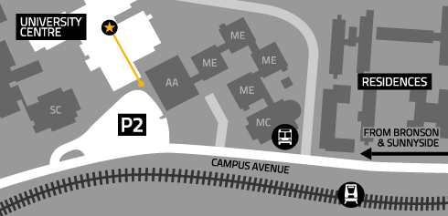

<!DOCTYPE html PUBLIC "-//W3C//DTD XHTML 1.0 Transitional//EN" "http://www.w3.org/TR/xhtml1/DTD/xhtml1-transitional.dtd">
<html xmlns="http://www.w3.org/1999/xhtml">
<head>
<meta http-equiv="Content-Type" content="text/html; charset=utf-8" />
<title>Untitled Document</title>
</head>

<body>

                    	<table width="700" border="0">
						  <tr>
  						 	 <td><center>
                             	<br /><br /><br />
                                </center><br /><br />
                                Complimentary refreshments.<br/>
                                Free parking available in Lot P2.</td>
 						 	  <td width="490"><br /><br />
                              The School of Industrial Design and the Carleton University Alumni Association, Industrial Design 	Chapter, invite you to the annual Alumni Night, on April 16th, 2011 at 5PM, to honour the contributions of Jacques Ostiguy to the School of Industrial Design. Featuring presentations by Floyd Pushelberg and many others.<br/>
Please register at alumni.carleton.ca/events<br/>
	<br/>
</td>
						 </tr>
						</table>

</body>
</html>
